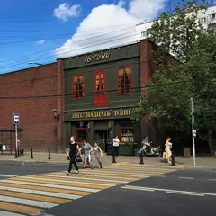

Подборка редакции · Москва
Бары, куда хочется вернуться
Коктейли у Патриарших, джаз за зелёной дверью, бар в сводах старой типографии, настойки у стойки и круглосуточные места на случай, когда вечер затянулся. Выбирай по настроению: поговорить или потанцевать.
- 14 мест
Что в подборке 14
Тверская ул., 23, стр. 1
Легендарный коктейльный бар: классика, рояль, жёлтые стены и окна в пол.
Большой Козихинский пер., 9/12
Новое
Бар в духе 1920-х за зелёной дверью на Патриках: каждый вечер около 21:00 живой джаз, вход свободный, столы не бронируют — просто приходи.
ул. Малая Бронная, 28
Новое
Небольшой коктейльный бар у Патриарших прудов: из окна видно пруд, есть терраса. Роллы и поке, по вечерам DJ, работает до 6 утра.
ул. Петровка, 20/1
Новое
Бар в кирпичных сводах бывшей типографии на Петровке, вход через японский ресторан. В будни живой джаз и соул, в пятницу и субботу DJ до 4 утра.
Садовая-Каретная ул., 20, стр. 2
Bib Gourmand Michelin 2021
Домашний бар, где хозяева сами готовят пиццу и коктейли. Средний чек ~1 500 ₽.
ул. Петровка, 30/7, фиолетовая дверь с глазом
Бар, названный в честь королевы вуду из Нового Орлеана: вход через фиолетовую дверь с нарисованным глазом, во дворе бывают ужины-путешествия.
Кривоколенный пер., 9, стр. 3
Винный бар с редкими бутылками небольших виноделен.
Большой Трёхсвятительский пер., 2/1, стр. 1
Коктейльный бар на Хитровке с сезонной кухней: фри с трюфелем, хумус в азиатской версии.
Большой Спасоглинищевский пер., 9/1, стр. 10
Настойки у стойки, без привычных столиков — живо и недорого. У Китай-города.
Подробнее и маршрут: Рюмочная мечтыПозвать сюда: Рюмочная мечты
Покровка, 7/9-11, корп. 1
Бар крафтового пива на Покровке.

ул. Пресненский Вал, 6, стр. 1
Новое
Паб со своим пивом и отдельным концертным залом у «Улицы 1905 года». Живые концерты, работает до 6 утра — проверенный вариант для вечера с друзьями.
Подробнее и маршрут: 16 ТоннПозвать сюда: 16 Тонн
Фото: Gennady Grachev from Moscow, Russia, CC BY 2.0 · Wikimedia Commons
Пушечная ул., 7/5, стр. 2
КруглосуточноНовое
Круглосуточный бар у «Кузнецкого Моста»: авторские коктейли, DJ, стендап и настольные игры. Подойдёт и для разговора вдвоём, и для ночи с танцами.
Подробнее и маршрут: Наука и жизньПозвать сюда: Наука и жизнь
ул. Большая Дмитровка, 7/5, стр. 5
КруглосуточноНовое
Ресторан-бар на Большой Дмитровке, открыт круглосуточно: завтраки и десерты в любой час, коктейли, летом веранда. Выручает, когда вечер затянулся.
ул. Мясницкая, 42, стр. 2
Готический гастробар во дворах Мясницкой: свечи, белые полотна и росписи с ангелами. Днём завтраки и сэндвичи, по пятницам и субботам — танцы и DJ.
Как позвать
- Выбери план, место или событие — в карточке адрес, цены и маршрут в Яндекс Картах.
- Нажми «Позвать сюда» — соберётся приглашение-игра для свидания или голосование для компании.
- Отправь ссылку в любой мессенджер: тебе ответят, а компания отметит, куда и когда может. Бесплатно и без регистрации.